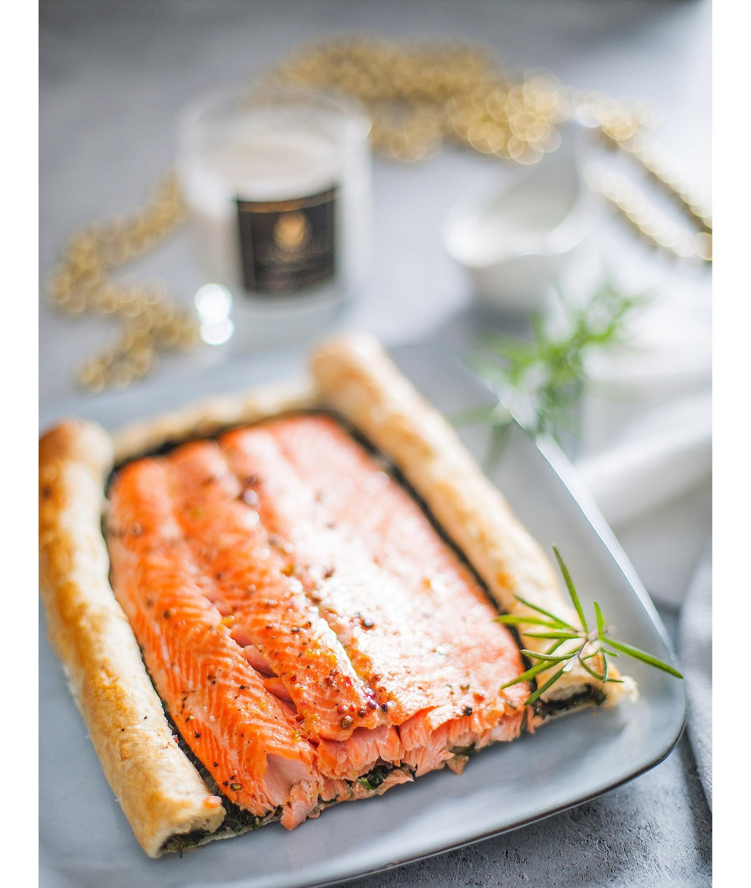

Лосось со шпинатом в слоеном тесте — эффектное горячее на праздничный стол. Шпинат и филе можно подготовить накануне. Главное — следить за тестом: если подрумянилось быстрее, чем по рецепту, сразу проверяйте рыбу. Готовность рыбы при 55–60 °С (131–140 °F) в центре.
Возможность хранить: в собранном сыром виде — несколько часов в холодильнике. Заморозка: нет.
для йогуртового соуса: